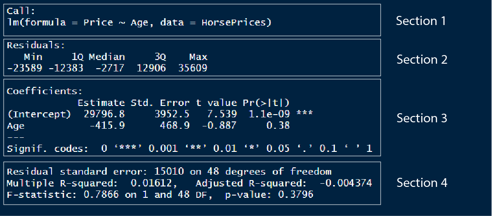
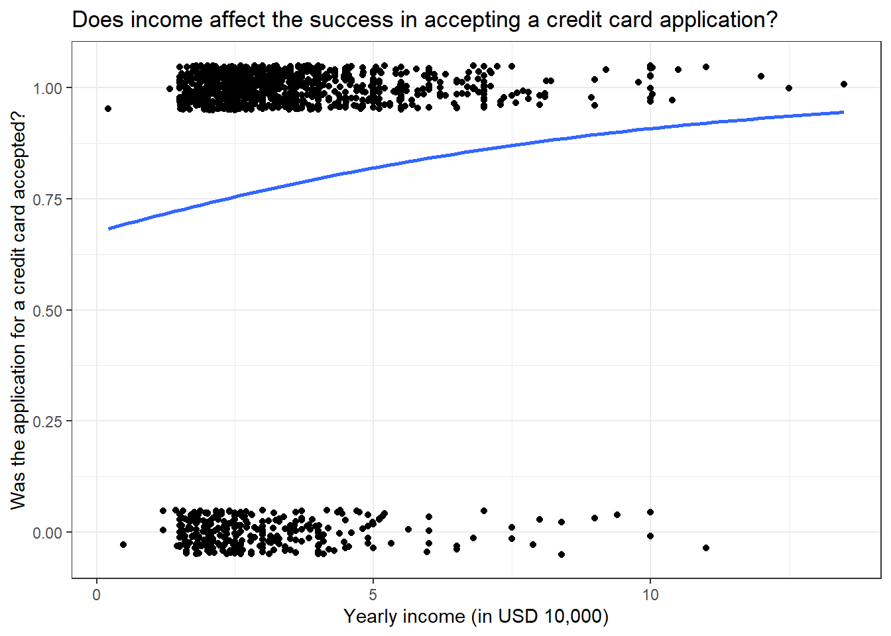
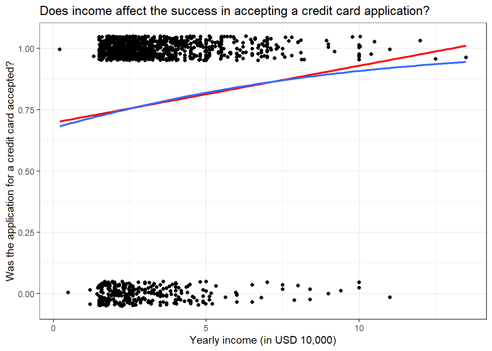
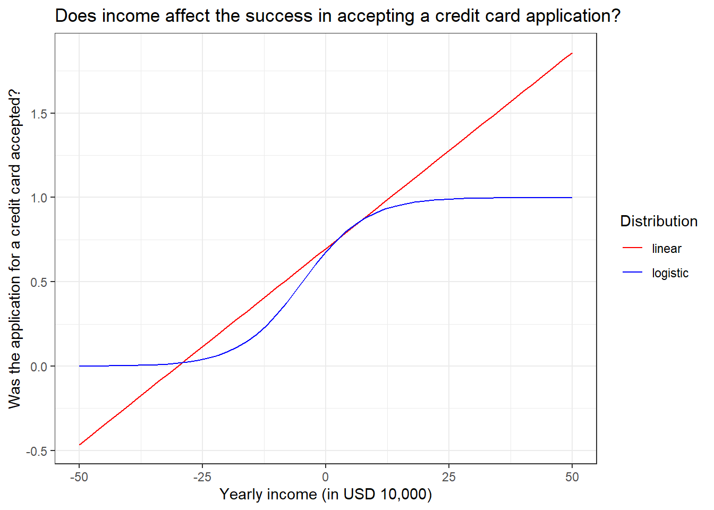
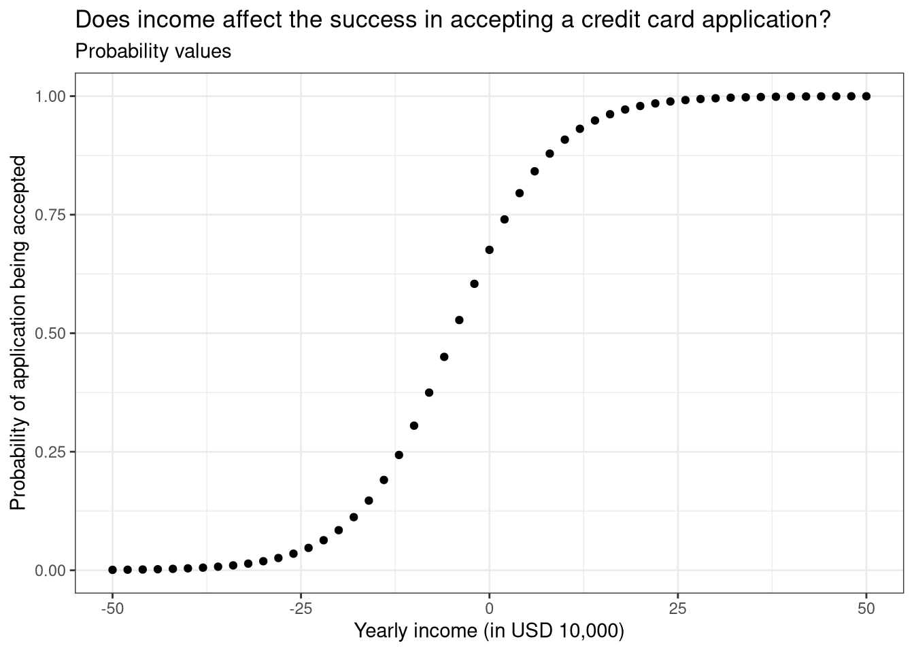
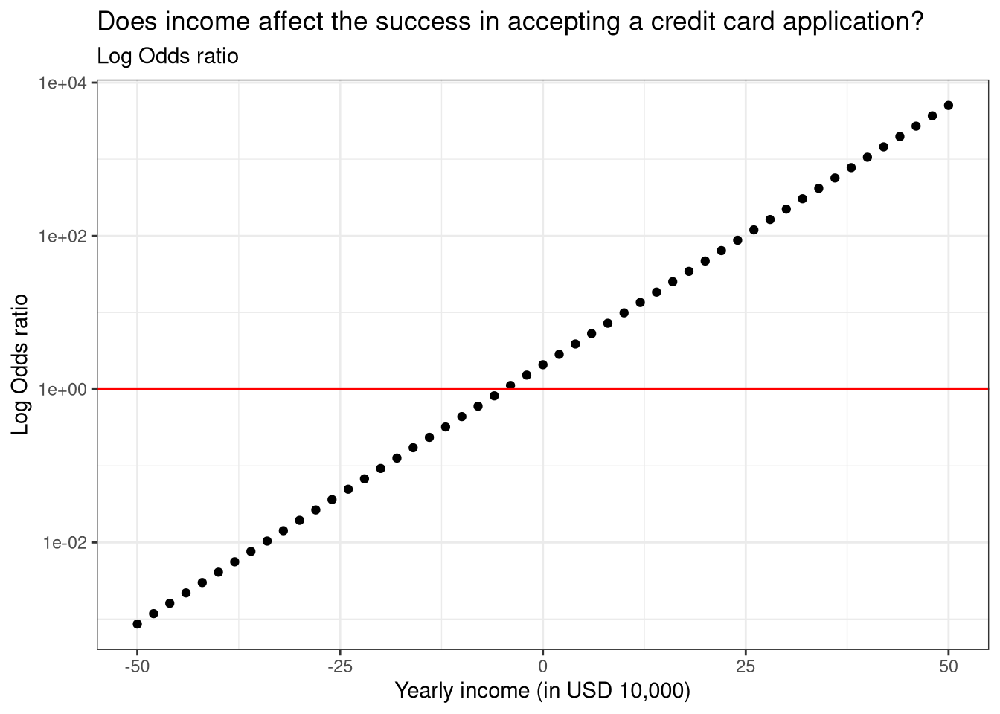
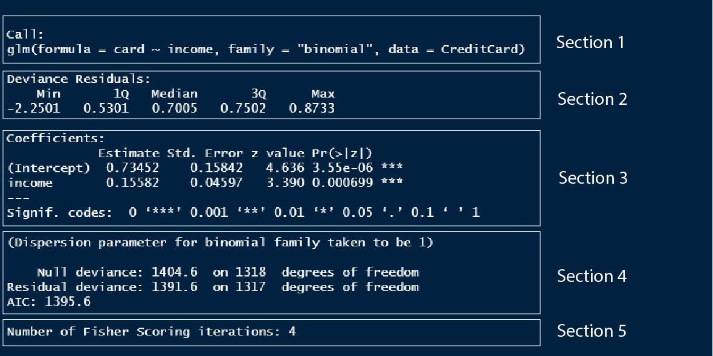

How to view model outputs as data frames using the broom package
Assessing linear model performance using; R-squared, Residual standard error and Root mean square error
Visualizing model fit using; Residual vs. Fitted plot, Q-Q plot and Scale-location plot
Analysing outliers using; Leverage (hat values) and Influence (cook’s distance)
What is logistic regression / logistic model
How to build a logistic model
Different types of predictions using the logistic model: Probability values, Most like outcomes, Odds ratio and Log odds ratio
Understanding the logistic model summary output
Assessing logistic model performance using; Confusion matrix, Accuracy, Sensitivity and Specificity
1 Introduction
In this tutorial, we will learn the basics of linear regression and logistic regression using R. We will learn how interpret the model summaries of both of them, how to predict values using models, how to assess and visualize model performance and so on.
2 Linear regression
Regression models are a part of statistical models which are used to find relationships between variables in a dataset. Linear regression or linear models are the simplest of the models which describe a linear relationship between two variables. Throughout this tutorial (and also in other tutorials) I might use regression and model interchangeably, please don’t get confused and just have it in your mind that they generally mean the same.
We will use the HorsePrices dataset from the Stat2Data package in R. The dataset contains the price and related characteristics of horses listed for sale on the internet. Using the dataset, we will see how the price of a horse (Price) changes according to its age (Age) using a linear model. We will plot this association using the geom_smooth() function in the ggplot2 package in R. But first let us visualize the dataset.
Now let us fit a model to the graph using the geom_smooth() function. To fit a linear model, we will use the method = "lm" argument. By default, the linear trend line comes with confidence intervals, we can disable this by specifying se = F.
From the linear trend line, we can see that there is some evidence suggesting that the price of the horse decreases as they age.
In the above linear regression plot, the relationship between the price of the horse and the age of the horse is described as a straight line which is the feature of linear regression. Thus, this trend line can be described by the equation of the straight line;
y=mx+c
Here m is the slope and c is the y-intercept.
Now let’s try to get the slope and y-intercept values for the model we just plotted. We will use the lm() function to model the regression of price and age of the horses. The syntax for the lm() function is as follows;
Here, we want to see how the price of the horse, which is the dependent variable, depends on the age of the horse, which is the independent variable. As mentioned before, linear regression is a type of statistical model. So in other words, we can also say that we are building a linear model to predict the price of the horse using the age of the horse.
library(Stat2Data)data("HorsePrices")# Building a linear model model_lm<-lm(Price~Age, data =HorsePrices)# Printing the model resultsprint(model_lm)
Call:
lm(formula = Price ~ Age, data = HorsePrices)
Coefficients:
(Intercept) Age
29796.8 -415.9
We get two values, an ‘intercept’ value and a value under the column ‘Age’.
Here the slope of the line is denoted under the ‘Age’ column and is -415.9
The y-intercept is given under the column intercept and is 29796.8.
Now, what do these values mean according to our model? Recall that the slope is the rate of change of y for x. Therefore, the value of -415.9 means that, as the horse ages one year, the price of the horse decreases by 415.9 dollars. Similarly, the y-intercept value is got when the x value is zero. So the intercept value of 29796.8 means that if the horse has an age of 0 years, or a newborn horse has an average price of 29796.8 dollars. The y-intercept and the slopes got from the model output are called the coefficients.
We can also predict the values of the response variable using a categorical explanatory variable. In the earlier case, the age of the horse was a numerical value, and we calculated the slope of it. Then what values do we get for a categorical explanatory variable?
To test this we will use the Hawks dataset from the Stat2Data package in R. The dataset contains measurements of three hawk species. We will see if body weight (Weight) is different between the three hawk species (Species). The three different hawk species in this dataset are; CH=Cooper’s, RT=Red-tailed, and SS=Sharp-Shinned.
library(Stat2Data)data("Hawks")# Building a linear model model_lm<-lm(Weight~Species, data =Hawks)# Printing the model resultsprint(model_lm)
We got the coefficient values where we have an intercept value and the values for two of the hawk species (RT and SS), so what happened to the third species (CH)? And what do the values for each species mean?
The intercept value shows the mean body weight for the third species (CH) and the rest of the values by their magnitude and sign tell us how greater or less their average body weight is. For example, the average body weight of RT is 420.5 + 673.9 = 1094.4g. We can change the model formula syntax by adding -1, to calculate individual averages for each level in our categorical explanatory variable.
library(Stat2Data)data("Hawks")# Building a linear model model_lm<-lm(Weight~Species-1, data =Hawks)# Printing the model resultsprint(model_lm)
Call:
lm(formula = Weight ~ Species - 1, data = Hawks)
Coefficients:
SpeciesCH SpeciesRT SpeciesSS
420.5 1094.4 148.0
Thus we essentially get the back the average body masses of all the hawk species in our data. We can cross check this by checking the means individually as shown below.
One cool use of models is that we can use them to predict values for which data is not available. Let us go back to the first model we created where we have the price of horses predicted by their age. Let us look at the plot again.
We have age values from 1 year to 20 years. What if we want to know what the price of the course would be for a 30-year-old horse given the trend seen without collected data? We can know this price with the use of the model we created. Using the predict() function, we can input our model and the value for which we want the prediction.
library(Stat2Data)data("HorsePrices")# Building a linear model model_lm<-lm(Price~Age, data =HorsePrices)age_30<-data.frame(Age=c(30))# Predicting price for a 30 years old horsepredict(model_lm, newdata =age_30)
1
17320.89
Our model predicts that the price of a 30-year-old horse would be 17320.89 dollars. Therefore, even though we did not have data for a 30-year-old horse, with help of our model, we were able to extrapolate to find the price for the 30-year-old horse.
4 Understanding the summary of a linear model
We can use the summary() function to get the results of the linear model. Let us look at what each section in summary means;
library(Stat2Data)data("HorsePrices")# Building a linear model model_lm<-lm(Price~Age, data =HorsePrices)# Printing model outputssummary(model_lm)

In section 1, we have the model formula used for modelling
In section 2, we have the 1st quartile, median and the 3rd quartile of the residuals. The residual is the distance or difference between the predicted value and the actual value in the dataset. One of the important requirements for a linear model to be applied to a dataset is that the residuals should be normally distributed. We can check if the residuals are normally distributed by looking at this section. For normally distributed residuals, the median should be close to zero and the 1st and 3rd quartiles should have similar absolute values.
In section 3, we have the y intercept value and the slope for the Age variable. We also have the standard error value and the t-statistics coupled with a corresponding p-value. The level of significance is noted by the number of asterisks.
In section 4, we can evaluate the model performance. There are mainly two metrics that assess the model fit; the residual standard error and the R-squared value. We will see more about these values later.
5 Getting the model output
Using various functions in the broom package in R, we can extract or view different model outputs.
We can use the tidy() function to view or save the coefficients of the model as a data frame which is easier to manipulate using different functions in the dplyr package.
library(Stat2Data)library(broom)data("HorsePrices")# Building a linear model model_lm<-lm(Price~Age, data =HorsePrices)# Visualising coefficients and other metrics as a data frametidy(model_lm)
We can use the augment() function to return the dataset values with their corresponding fitted value and various other values. The .fitted column contains the fitted values and the .resid column contains the residuals.
library(Stat2Data)library(broom)data("HorsePrices")# Building a linear model model_lm<-lm(Price~Age, data =HorsePrices)# Visualising dataset and model output valuesaugment(model_lm)
The glance() function return section 4 part of the model or the model performance metrics as a data frame.
library(Stat2Data)library(broom)data("HorsePrices")# Building a linear model model_lm<-lm(Price~Age, data =HorsePrices)# Visualising model performance metricsglance(model_lm)
6 Assessing linear model fit
Once we fit a model, we can predict values outside the dataset. A good model will be able to predict values more accurately, so how do we know how good a model is? To assess model fit, we mainly use three metrics and they are described below.
6.1 R-squared value
In section 4 of the model summary, we can see an R-squared value of 0.01612. The R-squared value explains how much of the variance seen in the response variable is explained by the explanatory variables. The value of R-squared is between 0 and 1. The value 0 corresponds to the worst possible fit and 1 corresponds to the best fit. Here we have a value close to 0, which means our model is poorly fit. The R-squared value is typically just the squared value of the correlation between the response and the explanatory variable.
# R-squared is nothing but squared of correlation valueHorsePrices%>%summarise(R_squared =cor(Price, Age)^2)
6.2 Residual standard error (RSE)
Residual is the difference between the predicted and actual value in the model. The residual standard error estimated on average how much difference is there between the predicted and actual value in the model. A lower value suggests that the predicted value closely aligns with the values in the dataset suggesting a good fit.
In the previous model the residual standard error is;
We got a value of 15012, this means that there is, on average a difference of 15012 dollars between the predicted and actual values in the dataset.
The residual standard error is calculated by taking the square root of the sum of the squared residuals divided by the number of degrees of freedom. The degrees of freedom are calculated as the difference between the total observations and the number of variables used in the model (we used Price and Age variables, so we used 2 variables in total).
library(Stat2Data)data("HorsePrices")# Building a linear model model_lm<-lm(Price~Age, data =HorsePrices)# Calculating the RSE valueHorsePrices%>%mutate(residual_sq =residuals(model_lm)^2)%>%summarise(sum_residual_sq =sum(residual_sq), degrees_of_freedom =n()-2, rse =sqrt(sum_residual_sq/degrees_of_freedom))
6.3 Root mean square error (RMSE)
The root mean square error is another metric which is similar to that of the residual standard error value and functions the same way in quantifying how inaccurate model predictions are. It is typically not preferred but it is another metric that is sometimes used. The only difference in the calculation between RSE and RMSE is that instead of divining by the degrees of freedom, RMSE is calculated by dividing the total number of observations.
library(Stat2Data)data("HorsePrices")# Building a linear model model_lm<-lm(Price~Age, data =HorsePrices)# Calculating the RMSE valueHorsePrices%>%mutate(residual_sq =residuals(model_lm)^2)%>%summarise(sum_residual_sq =sum(residual_sq), total_observations =n(), rse =sqrt(sum_residual_sq/total_observations))
7 Visualizing linear model fit
In addition, to assess model fit using different metrics, we can also visualize the model fit using different methods. These methods include Residual vs. Fitted plot, Q-Q plot and Scale-location plot. We will be using the autoplot() function in the ggfortify package in R to visualize all three of them. We will use the which = argument inside the autoplot() function to specify which plot to visualize. The argument takes in the following values;
1 : Residual vs. Fitted plot
2 : Q-Q plot
3 : Scale-location plot
Now let us see what each of these plots corresponds to.
Recall that the residual is the difference between the predicted value and the data value. In the plot shown above, the x-axis has the fitted or predicted values of the model and its corresponding residual value on the y-axis. If the predicted values closely resemble the actual data values, then the blue line will be very similar to the dotted horizontal line at y = 0. In our case, however, the model is a mess! as you can see the blue line very much deviates from the y = 0 line.
7.2 Q-Q plot
The Q-Q plot tells us whether the residuals are normally distributed.
You can see that the tail ends of the Q-Q plot deviate away from the straight line, suggesting that at lower and higher age values, the model does a poor fit to predict the price values.
7.3 Scale-location plot
The scale-location plot is plotted with the square root values of the standardized residual values on the y-axis and fitted or predicted values on the x-axis. The plot tells us whether, along the predicted value, the residuals get bigger or smaller.
In the plot shown above, starting from lower price values, the residuals decrease in size and for higher price values, the residuals increase in the size. Overall this suggests that for lower and higher age values in our dataset, the model struggles to output a good fit.
We can plot all three by inputting all the number arguments;
Outliers are data values which are either considerably large or small when compared to the rest of the data values. They rarely occur and can be due to pure chance or measurement errors. But they can have a strong influence on the linear relationship between two variables and can mess up our inferences while doing linear modelling. So there are two ways to assess the presence and effect of outliers in the dataset; they are called leverage and influence.
8.1 Leverage
Leverage value denotes extreme values in our dataset. Higher the leverage, the more extreme the data point is. We can find the leverage values from a model object using the hatvalues() function. Alternatively, using the augment() function from the broom package, we can extract the leverage value from the .hat column.
Looks like we have three outliers in this dataset which have significantly large leverage values.
8.2 Influence
The influence of a data point measures how much of a difference will the model have if that value is excluded while building the model. It is represented by a metric called Cook’s distance where bigger values denoted higher influence and thus the presence of an outlier. We can use the cooks.distance() function to calculate the influence of data points in a model object. Alternatively, we can, like before, use the augment() function and extract the .cooksd column to get the Cook’s distance values.
Like before, we can use the autoplot() function in the ggfortify package in R to visualize leverage and influence. The input values for which = corresponding leverage and influence are;
From the plots, it seems like we have three outliers which can significantly affect the model.
9 Logistic regression
Linear models are best used for the continuous response variable. But sometimes we can have a binary response variable like; survival data: dead or alive, choice data: yes or no, survey data: disagree or agree. In these cases, linear models will not work and we should rely on logistic models, which model using a binomial distribution. The logistic model is built in R using the glm() function with family = argument set to binomial. This is shown below;
Building a logistic model: glm(response ~ predictor, data, family = "binomial")
Let us look at the CreditCard dataset in the {AER} package in R. The dataset contains the credit history of a sample of applicants for a type of credit card. We will predict to see the success of the acceptance of the credit card application (card) using yearly income (income). Let us look at the dataset first.
Here, the response variable card has only two values and thus is a binary response variable. Let us plot the data and see how the values are distributed.
library(AER)library(ggplot2)data("CreditCard")# Plotting the dataggplot(CreditCard, aes(income, card))+geom_jitter(width =0, height =0.05)+labs(title ="Does income affect the success in accepting a credit card application?", x ="Yearly income (in USD 10,000)", y ="Was the application for a credit card accepted?")+theme_bw()
We get some interesting results, even at a low yearly income, we have a high number of successful credit applicants but at the same time, we also have many applicants getting rejected from acquiring a credit card. Very few people have their credit card requests rejected when they have a high yearly income. Overall, the plot seems to suggest that yearly income is not a good predictor for looking at the success of credit card applications. Let us see if that is the case by modelling the data using a logistic model.
library(AER)data("CreditCard")# Building a logistic modelmodel_log<-glm(card~income, data =CreditCard, family ="binomial")# Printing model outputssummary(model_log)
Call:
glm(formula = card ~ income, family = "binomial", data = CreditCard)
Deviance Residuals:
Min 1Q Median 3Q Max
-2.2501 0.5301 0.7005 0.7502 0.8733
Coefficients:
Estimate Std. Error z value Pr(>|z|)
(Intercept) 0.73452 0.15842 4.636 3.55e-06 ***
income 0.15582 0.04597 3.390 0.000699 ***
---
Signif. codes: 0 '***' 0.001 '**' 0.01 '*' 0.05 '.' 0.1 ' ' 1
(Dispersion parameter for binomial family taken to be 1)
Null deviance: 1404.6 on 1318 degrees of freedom
Residual deviance: 1391.6 on 1317 degrees of freedom
AIC: 1395.6
Number of Fisher Scoring iterations: 4
Even though from the model it was not apparent that yearly income had an association with the success of a credit application, the model suggests that yearly income does significantly explain the variance seen in the success of the credit applications. We will come back to interpreting the model summary soon.
As seen earlier for linear models, we can also plot logistic models. We have to specify method = "glm" in the and then specify the family by inputting method.args = list(family = binomial). Now to the plot, we have to change the y-axis variable to boolean values (0 or 1). We can either use the recode() function before plotting and modifying the dataset or straight away input as.numeric() to the y-axis variable and subtract 1 to rescale the values to boolean.
library(AER)library(ggplot2)data("CreditCard")# Plotting the logistic modelggplot(CreditCard, aes(income, as.numeric(card)-1))+geom_jitter(width =0, height =0.05)+geom_smooth(method ="glm", se =F, method.args =list(family =binomial))+labs(title ="Does income affect the success in accepting a credit card application?", x ="Yearly income (in USD 10,000)", y ="Was the application for a credit card accepted?")+theme_bw()

In the y-axis, you can see values ranging from 0 to 1 and the blue trend line shifting towards 1 for high values of yearly income. This suggests that, as the yearly income increase, the probability of success in credit card application increases.
Now one question that might come to your mind (I had this question when I was learning regression) is why can’t we apply linear regression if it is just 0 and 1 values for the response variable. So let us plot both linear and logistic regression for the above data.
library(AER)library(ggplot2)data("CreditCard")# Plotting the logistic modelggplot(CreditCard, aes(income, as.numeric(card)-1))+geom_jitter(width =0, height =0.05)+geom_smooth(method ="lm", se =F, col ="red")+geom_smooth(method ="glm", se =F, method.args =list(family =binomial))+labs(title ="Does income affect the success in accepting a credit card application?", x ="Yearly income (in USD 10,000)", y ="Was the application for a credit card accepted?")+theme_bw()

HA! If we got a similar trend line as that of the logistic model, then why bother with a logistic model? Well, hold your horses! If we take a closer look at the trend line, we can see that the red line overshoots the y-axis value of 1. This means we have a probability value greater than 1 which is absurd. Perhaps the best way to see why linear models don’t work for binary response variables is by predicting values using them with values outside the dataset.
library(AER)library(ggplot2)library(dplyr)data("CreditCard")# Building modelsmodel_log<-glm(card~income, data =CreditCard, family ="binomial")model_lm<-lm((as.numeric(card)-1)~income, data =CreditCard)# # Generating random income valuesexplorartory_values<-tibble(income =seq(-50,50,2))# Predicting the values for linear and logistics# We use the 'type = response' to calculate probabilitiespredict_values<-explorartory_values%>%mutate(predict_lm =predict(model_lm, explorartory_values), predict_log =predict(model_log, explorartory_values, type ="response"))# Plotting the predicted values as a line graphggplot(predict_values, aes(income))+geom_line(data =predict_values, aes(y =predict_lm, col ="linear"))+geom_line(data =predict_values, aes(y =predict_log, col ="logistic"))+labs(title ="Does income affect the success in accepting a credit card application?", x ="Yearly income (in USD 10,000)", y ="Was the application for a credit card accepted?")+scale_colour_manual("Distribution", values =c("red", "blue"))+theme_bw()

You can see that the predicted values using the linear model are going beyond 0 and 1 whereas the logistic model predicts values between 0 and 1. Also, notice the sigmoid curve or the S-shaped curve which is a characteristic of the logistic model. Thus for a binary response variable, logistic modelling is the best.
10 Making predictions using a logistic model
Like in the linear model, we use the predict() function to predict values using a logistics model. We can change the type of values we get from the predict() function using the type = argument. By default, the predict function outputs log odds ratio (which is type = "link"), another option is type = "response" which outputs probability values. Other ways for expressing predicted values from the model include ‘odds ratio’ and ’most likely outcomes.
10.1 Probability values
One of the easier ways of expressing the predicted values from a logistic model. Simply it just calculates the probability of the levels in the response variable.
library(AER)library(dplyr)data("CreditCard")# Building modelsmodel_log<-glm(card~income, data =CreditCard, family ="binomial")# Generating random income valuesexplorartory_values<-tibble(income =seq(-50,50,2))# Calculating the probability valuespredicted_Values<-explorartory_values%>%mutate(probability =predict(model_log, explorartory_values, type ="response"))# Printing probability valueshead(predicted_Values)
# Plotting the probability valuesggplot(predicted_Values, aes(income, probability))+geom_point()+labs(title ="Does income affect the success in accepting a credit card application?", subtitle ="Probability values", x ="Yearly income (in USD 10,000)", y ="Probability of application being accepted")+theme_bw()

10.2 Most likely outcome
This is the easiest way to express logistic model predicted values. It rescales the probability values into stating whether an event happens or not. Simply put, it rounds the probability values to give either 0 or 1.
library(AER)library(dplyr)data("CreditCard")# Building modelsmodel_log<-glm(card~income, data =CreditCard, family ="binomial")# Generating random income valuesexplorartory_values<-tibble(income =seq(-50,50,2))# Calculating the most likely valuespredicted_Values<-explorartory_values%>%mutate(probability =predict(model_log, explorartory_values, type ="response"), most_likely =round(probability))# Printing most likely valueshead(predicted_Values)
# Plotting the most likely valuesggplot(predicted_Values, aes(income, most_likely))+geom_point()+labs(title ="Does income affect the success in accepting a credit card application?", subtitle ="Most likely values", x ="Yearly income (in USD 10,000)", y ="Number of predicted applications being accepted")+theme_bw()
10.3 Odds ratio
The odds ratio is calculated by taking the probability of success divided by the probability of losing. In simple terms, it tells the odds of one event happening compared to the other.
library(AER)library(dplyr)data("CreditCard")# Building modelsmodel_log<-glm(card~income, data =CreditCard, family ="binomial")# Generating random income valuesexplorartory_values<-tibble(income =seq(-50,50,2))# Calculating the odds ratio valuespredicted_Values<-explorartory_values%>%mutate(probability =predict(model_log, explorartory_values, type ="response"), odds_ratio =probability/(1-probability))# Printing odds ratio valueshead(predicted_Values)
# Plotting the odds ratio valuesggplot(predicted_Values, aes(income, odds_ratio))+geom_point()+labs(title ="Does income affect the success in accepting a credit card application?", subtitle ="Odds ratio", x ="Yearly income (in USD 10,000)", y ="Odds ratio")+geom_hline(yintercept =1, col ="red")+theme_bw()
The plot has a horizontal line plotted with y = 0. The points on this line correspond to equal odds of being rejected and accepted for a credit card application (equal odds of winning and losing). The y values for example 1000 correspond to 1000 successes for every one failure in a credit card application. The plot suggests that after the 18,000 dollars yearly income mark, the odds of success to failure rise exponentially.
10.4 Log odds ratio
The log odds ratio is the log-transformed value of the odds ratio. We will see how this value is superior to all the other values when we plot the values. Since we are transforming the y-axis values to log, we convert the scale of the y-axis to log using the scale_y_log10() function. By default, the predict() function outputs log odds ratio.
library(AER)library(dplyr)data("CreditCard")# Building modelsmodel_log<-glm(card~income, data =CreditCard, family ="binomial")# Generating random income valuesexplorartory_values<-tibble(income =seq(-50,50,2))# Calculating the log odds ratio valuespredicted_Values<-explorartory_values%>%mutate(probability =predict(model_log, explorartory_values, type ="response"), odds_ratio =probability/(1-probability), log_odds_ratio =log(odds_ratio), log_odds_ratio_1 =predict(model_log, explorartory_values))# Printing log odds ratio valueshead(predicted_Values)
# Plotting the log odds ratio valuesggplot(predicted_Values, aes(income, odds_ratio))+geom_point()+labs(title ="Does income affect the success in accepting a credit card application?", subtitle ="Log Odds ratio", x ="Yearly income (in USD 10,000)", y ="Log Odds ratio")+geom_hline(yintercept =1, col ="red")+scale_y_log10()+theme_bw()

Log transforming the odds ratio values resulted in a linear trend line which is easier to understand the overall relationship. We can see that as yearly income increases, the probability of success in credit card application will also rise.
Given below is the summary of the predicted value types and their usage concerning the audience in question. Some values like most likely outcomes might be best in explaining the trends in the data for non-experts or common people, whereas log odds might be best for experts.
Different scales of predicted values from a logistic model
Scale
Easier to explain values?
Easier to explain changes in the response variable?
Is it precise?
Probability
Yes
Not easy for x values in the middle
Yes
Most likely outcomes
Easiest out of all
Quickly compare high and low x values
No
Odds ratio
Kind of easy to explain. Odds of one event against another
Not really
Yes
Log odds ratio
Log transformed values are harder to explain
Linear relation after log transformation makes it easy to interpret changes
Yes
11 Understanding the summary of a logistic model
Now let us look at the summary of the logistic model we built earlier.
library(AER)data("CreditCard")# Building a logistic modelmodel_log<-glm(card~income, data =CreditCard, family ="binomial")# Printing model outputssummary(model_log)

Section 1 is the model formula we used to build the model.
Section 2 is the quantile values of the residuals in the model, which is to check if the residuals are normally distributed.
Section 3 outlines the model coefficients which are in log odds values which we discussed in detail above.
Section 4. I don’t know what these values are, so once I learn I will update this text.
Section 5. I don’t know what these values are, so once I learn I will update this text.
12 Assessing logistic model fit
To assess the performance of a logistic model we have several different metrics we can use that are different from the linear model metrics. Let us look at each of them.
12.1 Confusion matrix
The confusion matrix is a 2 by 2 matrix showcasing the number of correct predictions and no of wrong predictions.
The framework of a confusion matrix
Scale
Actually false
Actually true
Predicted false
True negative
False negative
Predicted true
False positive
True positive
Let us make a confusion matrix of a logistic model where credit card success (card) is predicted by the number of major derogatory reports against the applicant (reports).
library(AER)data("CreditCard")# Building a logistic modelmodel_log<-glm(card~reports, data =CreditCard, family ="binomial")# Extracting actual valuesactual_values<-as.numeric(CreditCard$card)-1# Extracting predicted valuespredicted_values<-round(fitted(model_log))# Building a confusion matrixconfusion_matrix<-table(predicted_values, actual_values)confusion_matrix
We have 1109 (104 + 1005) correct predictions, 18 false negatives and 192 false positives. We can plot the confusion matrix with the help of yardstick and ggfortify packages.
if(!require(yardstick))install.packages('yardstick')library(AER)library(ggplot2)library(yardstick)library(ggfortify)data("CreditCard")# Building a logistic modelmodel_log<-glm(card~reports, data =CreditCard, family ="binomial")# Extracting actual valuesactual_values<-as.numeric(CreditCard$card)-1# Extracting predicted valuespredicted_values<-round(fitted(model_log))# Building a confusion matrixconfusion_matrix<-table(predicted_values, actual_values)# Converting the confusion matrix into an object that can be plottedconf_matrix<-conf_mat(confusion_matrix)# Plotting the confusion matrixautoplot(conf_matrix)+labs(title ="Mosaic plot of confusion matrix", x ="Actual value", y ="Predicted value")+theme_bw()
Now let us see how to interpret this plot. In the x-axis, you can see the actual values, 0 corresponds to failure in getting the credit card application accepted and 1 corresponds to the success of the same. The width of the bars corresponds to the proportion of the values of 0 and 1 in the dataset. There are more success values than failure values. Now, for the corresponding actual value, we have the bar split into respective predicted values. For actual failure values, we have a lot of predicted values falsely marking it as success. On the other hand, for the actual success value, most of the predicted values were correct. Thus the first bar under 0 tells us about the false positive cases and the second bar under 1 tells us about the false negative cases. We can see that our model has more false positive cases than false positive cases which is what we saw in the confusion matrix.
12.2 Accuracy
Accuracy is simply the proportion of correct predictions compared to all predictions.
We can find the accuracy from the summary of the confusion matrix we made using the summary() and slice() functions. The event_level = "second" is to denote the second column of the confusion matrix as the success value which is 1.
library(AER)library(yardstick)data("CreditCard")# Building a logistic modelmodel_log<-glm(card~reports, data =CreditCard, family ="binomial")# Extracting actual valuesactual_values<-as.numeric(CreditCard$card)-1# Extracting predicted valuespredicted_values<-round(fitted(model_log))# Building a confusion matrixconfusion_matrix<-table(predicted_values, actual_values)# Converting the confusion matrix into an object that can be plottedconf_matrix<-conf_mat(confusion_matrix)# Finding accuracy of the modelsummary(conf_matrix, event_level ="second")%>%slice(1)
We got an accuracy value of 84% for the model we built.
12.3 Sensitivity
Sensitivity tells us the proportion of true positives. Higher values suggest that there are fewer false negatives.
library(AER)library(yardstick)data("CreditCard")# Building a logistic modelmodel_log<-glm(card~reports, data =CreditCard, family ="binomial")# Extracting actual valuesactual_values<-as.numeric(CreditCard$card)-1# Extracting predicted valuespredicted_values<-round(fitted(model_log))# Building a confusion matrixconfusion_matrix<-table(predicted_values, actual_values)# Converting the confusion matrix into an object that can be plottedconf_matrix<-conf_mat(confusion_matrix)# Finding sensitivity of the modelsummary(conf_matrix, event_level ="second")%>%slice(3)
We have around very 2% false negatives (100 - 98).
12.4 Specificity
Sensitivity tells us the proportion of true negatives. Higher values suggest that there are fewer false positives.
library(AER)library(yardstick)data("CreditCard")# Building a logistic modelmodel_log<-glm(card~reports, data =CreditCard, family ="binomial")# Extracting actual valuesactual_values<-as.numeric(CreditCard$card)-1# Extracting predicted valuespredicted_values<-round(fitted(model_log))# Building a confusion matrixconfusion_matrix<-table(predicted_values, actual_values)# Converting the confusion matrix into an object that can be plottedconf_matrix<-conf_mat(confusion_matrix)# Finding specificity of the modelsummary(conf_matrix, event_level ="second")%>%slice(4)
We have around 64% false positives (100 - 35).
13 Conclusion
Hurray! We completed the basics of regression using R. This tutorial will lay the foundations for learning statistical modelling which I have covered in the tutorial section. Let us recap what we studied in this tutorial;
What is linear regression / linear model
How to build a linear model and use it to predict
Understanding the linear model summary output
How to view model outputs as data frames using the broom package
Assessing linear model performance using; R-squared, Residual standard error and Root mean square error
Visualizing model fit using; Residual vs. Fitted plot, Q-Q plot and Scale-location plot
Analysing outliers using; Leverage (hat values) and Influence (cook’s distance)
What is logistic regression / logistic model
How to build a logistic model
Different types of predictions using the logistic model: Probability values, Most like outcomes, Odds ratio and Log odds ratio
Understanding the logistic model summary output
Assessing logistic model performance using; Confusion matrix, Accuracy, Sensitivity and Specificity
---title: "Introduction to Regression in R"description: "Learn the basics of regression in R"date: "09/02/2022"format: html: css: - https://cdn.knightlab.com/libs/juxtapose/latest/css/juxtapose.cssimage: images/intro_reg.pngcategories: [regression]filters: - social-shareshare: permalink: "https://one-carat-blog.netlify.app/tutorials/stat_model/intro_reg.html" description: "Introduction to Regression in R" twitter: true facebook: true reddit: true stumble: true tumblr: true linkedin: true email: true---:::{.callout-note}## TL;DRIn this article you will learn;1. What is linear regression / linear model2. How to build a linear model and use it to predict3. Understanding the linear model summary output4. How to view model outputs as data frames using the `{broom}` package5. Assessing linear model performance using; R-squared, Residual standard error and Root mean square error6. Visualizing model fit using; Residual vs. Fitted plot, Q-Q plot and Scale-location plot7. Analysing outliers using; Leverage (hat values) and Influence (cook's distance)8. What is logistic regression / logistic model9. How to build a logistic model10. Different types of predictions using the logistic model: Probability values, Most like outcomes, Odds ratio and Log odds ratio11. Understanding the logistic model summary output12. Assessing logistic model performance using; Confusion matrix, Accuracy, Sensitivity and Specificity:::## IntroductionIn this tutorial, we will learn the basics of linear regression and logistic regression using R. We will learn how interpret the model summaries of both of them, how to predict values using models, how to assess and visualize model performance and so on.## Linear regressionRegression models are a part of statistical models which are used to find relationships between variables in a dataset. Linear regression or linear models are the simplest of the models which describe a linear relationship between two variables. Throughout this tutorial (and also in other tutorials) I might use regression and model interchangeably, please don't get confused and just have it in your mind that they generally mean the same.We will use the `HorsePrices` dataset from the `{Stat2Data}` package in R. The dataset contains the price and related characteristics of horses listed for sale on the internet. Using the dataset, we will see how the price of a horse (`Price`) changes according to its age (`Age`) using a linear model. We will plot this association using the `geom_smooth()` function in the `{ggplot2}` package in R. But first let us visualize the dataset.```{r}if (!require(Stat2Data)) install.packages('Stat2Data')library(Stat2Data)library(dplyr)library(ggplot2)data("HorsePrices")# Plotting the dataHorsePrices %>%ggplot(aes(Age, Price)) +geom_point() +labs(title ="Does the price of the horse decrease as they age?",x ="Age (years)",y ="Price (dollars)") +theme_bw()```Now let us fit a model to the graph using the `geom_smooth()` function. To fit a linear model, we will use the `method = "lm"` argument. By default, the linear trend line comes with confidence intervals, we can disable this by specifying `se = F`.```{r}library(Stat2Data)library(dplyr)library(ggplot2)data("HorsePrices")# Plotting a linear modelHorsePrices %>%ggplot(aes(Age, Price)) +geom_point() +geom_smooth(method ="lm", se = F) +labs(title ="Does the price of the horse decrease as they age?",x ="Age (years)",y ="Price (dollars)") +theme_bw()```From the linear trend line, we can see that there is some evidence suggesting that the price of the horse decreases as they age.In the above linear regression plot, the relationship between the price of the horse and the age of the horse is described as a straight line which is the feature of linear regression. Thus, this trend line can be described by the equation of the straight line;$$y=mx+c$$Here $m$ is the slope and $c$ is the y-intercept.Now let's try to get the slope and y-intercept values for the model we just plotted. We will use the `lm()` function to model the regression of price and age of the horses. The syntax for the `lm()` function is as follows;* `lm(dependent variable ~ independent variable, dataset_name)`Here, we want to see how the price of the horse, which is the dependent variable, depends on the age of the horse, which is the independent variable. As mentioned before, linear regression is a type of statistical model. So in other words, we can also say that we are building a linear model to predict the price of the horse using the age of the horse. ```{r}library(Stat2Data)data("HorsePrices")# Building a linear model model_lm <-lm(Price ~ Age, data = HorsePrices)# Printing the model resultsprint(model_lm)```We get two values, an 'intercept' value and a value under the column 'Age'. 1. Here the slope of the line is denoted under the 'Age' column and is -415.92. The y-intercept is given under the column intercept and is 29796.8.Now, what do these values mean according to our model? Recall that the slope is the rate of change of y for x. Therefore, the value of -415.9 means that, as the horse ages one year, the price of the horse decreases by 415.9 dollars. Similarly, the y-intercept value is got when the x value is zero. So the intercept value of 29796.8 means that if the horse has an age of 0 years, or a newborn horse has an average price of 29796.8 dollars. The y-intercept and the slopes got from the model output are called the coefficients.We can also predict the values of the response variable using a categorical explanatory variable. In the earlier case, the age of the horse was a numerical value, and we calculated the slope of it. Then what values do we get for a categorical explanatory variable?To test this we will use the `Hawks` dataset from the `{Stat2Data}` package in R. The dataset contains measurements of three hawk species. We will see if body weight (`Weight`) is different between the three hawk species (`Species`). The three different hawk species in this dataset are; CH=Cooper’s, RT=Red-tailed, and SS=Sharp-Shinned.```{r}library(Stat2Data)data("Hawks")# Building a linear model model_lm <-lm(Weight ~ Species, data = Hawks)# Printing the model resultsprint(model_lm)```We got the coefficient values where we have an intercept value and the values for two of the hawk species (RT and SS), so what happened to the third species (CH)? And what do the values for each species mean?The intercept value shows the mean body weight for the third species (CH) and the rest of the values by their magnitude and sign tell us how greater or less their average body weight is. For example, the average body weight of RT is 420.5 + 673.9 = 1094.4g. We can change the model formula syntax by adding `-1`, to calculate individual averages for each level in our categorical explanatory variable.```{r}library(Stat2Data)data("Hawks")# Building a linear model model_lm <-lm(Weight ~ Species -1, data = Hawks)# Printing the model resultsprint(model_lm)```Thus we essentially get the back the average body masses of all the hawk species in our data. We can cross check this by checking the means individually as shown below.```{r}library(Stat2Data)data("Hawks")# Calculating the meanHawks %>%select(Species, Weight) %>%group_by(Species) %>%summarise(mean_weight =mean(Weight, na.rm = T))```## Making predicition using a linear modelOne cool use of models is that we can use them to predict values for which data is not available. Let us go back to the first model we created where we have the price of horses predicted by their age. Let us look at the plot again.```{r}if (!require(Stat2Data)) install.packages('Stat2Data')library(Stat2Data)library(dplyr)library(ggplot2)data("HorsePrices")# Plotting a linear modelHorsePrices %>%ggplot(aes(Age, Price)) +geom_point() +geom_smooth(method ="lm", se = F) +labs(title ="Does the price of the horse decrease as they age?",x ="Age (years)",y ="Price (dollars)") +theme_bw()```We have age values from 1 year to 20 years. What if we want to know what the price of the course would be for a 30-year-old horse given the trend seen without collected data? We can know this price with the use of the model we created. Using the `predict()` function, we can input our model and the value for which we want the prediction.```{r}library(Stat2Data)data("HorsePrices")# Building a linear model model_lm <-lm(Price ~ Age, data = HorsePrices)age_30 <-data.frame(Age=c(30))# Predicting price for a 30 years old horsepredict(model_lm, newdata = age_30)```Our model predicts that the price of a 30-year-old horse would be 17320.89 dollars. Therefore, even though we did not have data for a 30-year-old horse, with help of our model, we were able to extrapolate to find the price for the 30-year-old horse.## Understanding the summary of a linear modelWe can use the `summary()` function to get the results of the linear model. Let us look at what each section in summary means;```{r}#| eval: falselibrary(Stat2Data)data("HorsePrices")# Building a linear model model_lm <-lm(Price ~ Age, data = HorsePrices)# Printing model outputssummary(model_lm)```1. In section 1, we have the model formula used for modelling2. In section 2, we have the 1st quartile, median and the 3rd quartile of the residuals. The residual is the distance or difference between the predicted value and the actual value in the dataset. One of the important requirements for a linear model to be applied to a dataset is that the residuals should be normally distributed. We can check if the residuals are normally distributed by looking at this section. For normally distributed residuals, the median should be close to zero and the 1st and 3rd quartiles should have similar absolute values.3. In section 3, we have the y intercept value and the slope for the Age variable. We also have the standard error value and the t-statistics coupled with a corresponding p-value. The level of significance is noted by the number of asterisks.4. In section 4, we can evaluate the model performance. There are mainly two metrics that assess the model fit; the *residual standard error* and the *R-squared value*. We will see more about these values later.## Getting the model outputUsing various functions in the `{broom}` package in R, we can extract or view different model outputs.1. We can use the `tidy()` function to view or save the coefficients of the model as a data frame which is easier to manipulate using different functions in the `{dplyr}` package.```{r}library(Stat2Data)library(broom)data("HorsePrices")# Building a linear model model_lm <-lm(Price ~ Age, data = HorsePrices)# Visualising coefficients and other metrics as a data frametidy(model_lm)```2. We can use the `augment()` function to return the dataset values with their corresponding fitted value and various other values. The `.fitted` column contains the fitted values and the `.resid` column contains the residuals.```{r}library(Stat2Data)library(broom)data("HorsePrices")# Building a linear model model_lm <-lm(Price ~ Age, data = HorsePrices)# Visualising dataset and model output valuesaugment(model_lm)```3. The `glance()` function return section 4 part of the model or the model performance metrics as a data frame.```{r}library(Stat2Data)library(broom)data("HorsePrices")# Building a linear model model_lm <-lm(Price ~ Age, data = HorsePrices)# Visualising model performance metricsglance(model_lm)```## Assessing linear model fitOnce we fit a model, we can predict values outside the dataset. A good model will be able to predict values more accurately, so how do we know how good a model is? To assess model fit, we mainly use three metrics and they are described below.### R-squared valueIn section 4 of the model summary, we can see an R-squared value of 0.01612. The R-squared value explains how much of the variance seen in the response variable is explained by the explanatory variables. The value of R-squared is between 0 and 1. The value 0 corresponds to the worst possible fit and 1 corresponds to the best fit. Here we have a value close to 0, which means our model is poorly fit. The R-squared value is typically just the squared value of the correlation between the response and the explanatory variable.```{r}library(Stat2Data)library(broom)data("HorsePrices")# Building a linear model model_lm <-lm(Price ~ Age, data = HorsePrices)# Extracting the R-squared valuemodel_lm %>%glance() %>%pull(r.squared)# R-squared is nothing but squared of correlation valueHorsePrices %>%summarise(R_squared =cor(Price, Age)^2)```### Residual standard error (RSE)Residual is the difference between the predicted and actual value in the model. The residual standard error estimated on average how much difference is there between the predicted and actual value in the model. A lower value suggests that the predicted value closely aligns with the values in the dataset suggesting a good fit.In the previous model the residual standard error is;```{r}library(Stat2Data)library(broom)data("HorsePrices")# Building a linear model model_lm <-lm(Price ~ Age, data = HorsePrices)# Extracting the RSE valuemodel_lm %>%glance() %>%pull(sigma)```We got a value of 15012, this means that there is, on average a difference of 15012 dollars between the predicted and actual values in the dataset.The residual standard error is calculated by taking the square root of the sum of the squared residuals divided by the number of degrees of freedom. The degrees of freedom are calculated as the difference between the total observations and the number of variables used in the model (we used Price and Age variables, so we used 2 variables in total).```{r}library(Stat2Data)data("HorsePrices")# Building a linear model model_lm <-lm(Price ~ Age, data = HorsePrices)# Calculating the RSE valueHorsePrices %>%mutate(residual_sq =residuals(model_lm)^2) %>%summarise(sum_residual_sq =sum(residual_sq),degrees_of_freedom =n() -2,rse =sqrt(sum_residual_sq/degrees_of_freedom))```### Root mean square error (RMSE)The root mean square error is another metric which is similar to that of the residual standard error value and functions the same way in quantifying how inaccurate model predictions are. It is typically not preferred but it is another metric that is sometimes used. The only difference in the calculation between RSE and RMSE is that instead of divining by the degrees of freedom, RMSE is calculated by dividing the total number of observations.```{r}library(Stat2Data)data("HorsePrices")# Building a linear model model_lm <-lm(Price ~ Age, data = HorsePrices)# Calculating the RMSE valueHorsePrices %>%mutate(residual_sq =residuals(model_lm)^2) %>%summarise(sum_residual_sq =sum(residual_sq),total_observations =n(),rse =sqrt(sum_residual_sq/total_observations))```## Visualizing linear model fitIn addition, to assess model fit using different metrics, we can also visualize the model fit using different methods. These methods include *Residual vs. Fitted plot*, *Q-Q plot* and *Scale-location plot*. We will be using the `autoplot()` function in the `{ggfortify}` package in R to visualize all three of them. We will use the `which = ` argument inside the `autoplot()` function to specify which plot to visualize. The argument takes in the following values;* `1` : Residual vs. Fitted plot* `2` : Q-Q plot* `3` : Scale-location plotNow let us see what each of these plots corresponds to.### Residual vs. Fitted plot```{r}if (!require(ggfortify)) install.packages('ggfortify')library(Stat2Data)library(ggplot2)library(ggfortify)data("HorsePrices")# Building a linear model model_lm <-lm(Price ~ Age, data = HorsePrices)# Plotting residual vs. fitted plotautoplot(model_lm, which =1, ncol =1) +theme_bw()```Recall that the residual is the difference between the predicted value and the data value. In the plot shown above, the x-axis has the fitted or predicted values of the model and its corresponding residual value on the y-axis. If the predicted values closely resemble the actual data values, then the blue line will be very similar to the dotted horizontal line at y = 0. In our case, however, the model is a mess! as you can see the blue line very much deviates from the y = 0 line.### Q-Q plotThe Q-Q plot tells us whether the residuals are normally distributed. ```{r}library(Stat2Data)library(ggplot2)library(ggfortify)data("HorsePrices")# Building a linear model model_lm <-lm(Price ~ Age, data = HorsePrices)# Plotting Q-Q plotautoplot(model_lm, which =2, ncol =1) +theme_bw()```You can see that the tail ends of the Q-Q plot deviate away from the straight line, suggesting that at lower and higher age values, the model does a poor fit to predict the price values.### Scale-location plotThe scale-location plot is plotted with the square root values of the standardized residual values on the y-axis and fitted or predicted values on the x-axis. The plot tells us whether, along the predicted value, the residuals get bigger or smaller.```{r}library(Stat2Data)library(ggplot2)library(ggfortify)data("HorsePrices")# Building a linear model model_lm <-lm(Price ~ Age, data = HorsePrices)# Plotting scale-location plotautoplot(model_lm, which =3, ncol =1) +theme_bw()```In the plot shown above, starting from lower price values, the residuals decrease in size and for higher price values, the residuals increase in the size. Overall this suggests that for lower and higher age values in our dataset, the model struggles to output a good fit.We can plot all three by inputting all the number arguments;```{r}library(Stat2Data)library(ggplot2)library(ggfortify)data("HorsePrices")# Building a linear model model_lm <-lm(Price ~ Age, data = HorsePrices)# Plotting all visualizations concerning the model fit autoplot(model_lm, which =1:3) +theme_bw()```## Outliers, leverage, and influenceOutliers are data values which are either considerably large or small when compared to the rest of the data values. They rarely occur and can be due to pure chance or measurement errors. But they can have a strong influence on the linear relationship between two variables and can mess up our inferences while doing linear modelling. So there are two ways to assess the presence and effect of outliers in the dataset; they are called *leverage* and *influence*.### LeverageLeverage value denotes extreme values in our dataset. Higher the leverage, the more extreme the data point is. We can find the leverage values from a model object using the `hatvalues()` function. Alternatively, using the `augment()` function from the `{broom}` package, we can extract the leverage value from the `.hat` column.```{r}library(Stat2Data)library(dplyr)library(broom)data("HorsePrices")# Building a linear model model_lm <-lm(Price ~ Age, data = HorsePrices)# Finding the leverage values using hatvalues()leverage <-hatvalues(model_lm)# Finding the leverage values using augment()model_lm %>%augment() %>%select(Price, Age, .hat) %>%arrange(desc(.hat)) %>%# Finding the extreme valueshead()```Looks like we have three outliers in this dataset which have significantly large leverage values. ### InfluenceThe influence of a data point measures how much of a difference will the model have if that value is excluded while building the model. It is represented by a metric called *Cook's distance* where bigger values denoted higher influence and thus the presence of an outlier. We can use the `cooks.distance()` function to calculate the influence of data points in a model object. Alternatively, we can, like before, use the `augment()` function and extract the `.cooksd` column to get the Cook's distance values.```{r}library(Stat2Data)library(dplyr)library(broom)data("HorsePrices")# Building a linear model model_lm <-lm(Price ~ Age, data = HorsePrices)# Finding the influence values using cooks.distance()cooks_distance <-cooks.distance(model_lm)# Finding the influence values using augment()model_lm %>%augment() %>%select(Price, Age, .cooksd) %>%arrange(desc(.cooksd)) %>%# Finding the extreme valueshead()```### Plotting leverage and influenceLike before, we can use the `autoplot()` function in the `{ggfortify}` package in R to visualize leverage and influence. The input values for `which = ` corresponding leverage and influence are;* `4` : Cook's distance* `5` : Residuals vs. Leverage* `6` : Cook's distance vs. Leverage```{r}library(Stat2Data)library(ggplot2)library(ggfortify)data("HorsePrices")# Building a linear model model_lm <-lm(Price ~ Age, data = HorsePrices)# Plotting all visualizations concerning leverage and influenceautoplot(model_lm, which =4:6) +theme_bw()```From the plots, it seems like we have three outliers which can significantly affect the model.## Logistic regressionLinear models are best used for the continuous response variable. But sometimes we can have a binary response variable like; survival data: dead or alive, choice data: yes or no, survey data: disagree or agree. In these cases, linear models will not work and we should rely on logistic models, which model using a binomial distribution. The logistic model is built in R using the `glm()` function with `family = ` argument set to `binomial`. This is shown below;* Building a logistic model: `glm(response ~ predictor, data, family = "binomial")`Let us look at the `CreditCard` dataset in the `{AER}` package in R. The dataset contains the credit history of a sample of applicants for a type of credit card. We will predict to see the success of the acceptance of the credit card application (`card`) using yearly income (`income`). Let us look at the dataset first.```{r}if (!require(AER)) install.packages('AER')library(AER)data("CreditCard")# Viewing the datahead(CreditCard)```Here, the response variable `card` has only two values and thus is a binary response variable. Let us plot the data and see how the values are distributed.```{r}library(AER)library(ggplot2)data("CreditCard")# Plotting the dataggplot(CreditCard, aes(income, card)) +geom_jitter(width =0, height =0.05) +labs(title ="Does income affect the success in accepting a credit card application?",x ="Yearly income (in USD 10,000)",y ="Was the application for a credit card accepted?") +theme_bw()```We get some interesting results, even at a low yearly income, we have a high number of successful credit applicants but at the same time, we also have many applicants getting rejected from acquiring a credit card. Very few people have their credit card requests rejected when they have a high yearly income. Overall, the plot seems to suggest that yearly income is not a good predictor for looking at the success of credit card applications. Let us see if that is the case by modelling the data using a logistic model.```{r}library(AER)data("CreditCard")# Building a logistic modelmodel_log <-glm(card ~ income, data = CreditCard, family ="binomial")# Printing model outputssummary(model_log)```Even though from the model it was not apparent that yearly income had an association with the success of a credit application, the model suggests that yearly income does significantly explain the variance seen in the success of the credit applications. We will come back to interpreting the model summary soon.As seen earlier for linear models, we can also plot logistic models. We have to specify `method = "glm"` in the and then specify the family by inputting `method.args = list(family = binomial)`. Now to the plot, we have to change the y-axis variable to boolean values (0 or 1). We can either use the `recode()` function before plotting and modifying the dataset or straight away input `as.numeric()` to the y-axis variable and subtract 1 to rescale the values to boolean.```{r}library(AER)library(ggplot2)data("CreditCard")# Plotting the logistic modelggplot(CreditCard, aes(income, as.numeric(card) -1)) +geom_jitter(width =0, height =0.05) +geom_smooth(method ="glm", se = F, method.args =list(family = binomial)) +labs(title ="Does income affect the success in accepting a credit card application?",x ="Yearly income (in USD 10,000)",y ="Was the application for a credit card accepted?") +theme_bw() ```In the y-axis, you can see values ranging from 0 to 1 and the blue trend line shifting towards 1 for high values of yearly income. This suggests that, as the yearly income increase, the probability of success in credit card application increases.Now one question that might come to your mind (I had this question when I was learning regression) is why can't we apply linear regression if it is just 0 and 1 values for the response variable. So let us plot both linear and logistic regression for the above data.```{r}library(AER)library(ggplot2)data("CreditCard")# Plotting the logistic modelggplot(CreditCard, aes(income, as.numeric(card) -1)) +geom_jitter(width =0, height =0.05) +geom_smooth(method ="lm", se = F, col ="red") +geom_smooth(method ="glm", se = F, method.args =list(family = binomial)) +labs(title ="Does income affect the success in accepting a credit card application?",x ="Yearly income (in USD 10,000)",y ="Was the application for a credit card accepted?") +theme_bw() ```HA! If we got a similar trend line as that of the logistic model, then why bother with a logistic model? Well, hold your horses! If we take a closer look at the trend line, we can see that the red line overshoots the y-axis value of 1. This means we have a probability value greater than 1 which is absurd. Perhaps the best way to see why linear models don't work for binary response variables is by predicting values using them with values outside the dataset.```{r}library(AER)library(ggplot2)library(dplyr)data("CreditCard")# Building modelsmodel_log <-glm(card ~ income, data = CreditCard, family ="binomial")model_lm <-lm((as.numeric(card) -1) ~ income, data = CreditCard)# # Generating random income valuesexplorartory_values <-tibble(income =seq(-50,50,2))# Predicting the values for linear and logistics# We use the 'type = response' to calculate probabilitiespredict_values <- explorartory_values %>%mutate(predict_lm =predict(model_lm, explorartory_values),predict_log =predict(model_log, explorartory_values, type ="response"))# Plotting the predicted values as a line graphggplot(predict_values, aes(income)) +geom_line(data = predict_values, aes(y = predict_lm, col ="linear")) +geom_line(data = predict_values, aes(y = predict_log, col ="logistic")) +labs(title ="Does income affect the success in accepting a credit card application?",x ="Yearly income (in USD 10,000)",y ="Was the application for a credit card accepted?") +scale_colour_manual("Distribution", values =c("red", "blue")) +theme_bw() ```You can see that the predicted values using the linear model are going beyond 0 and 1 whereas the logistic model predicts values between 0 and 1. Also, notice the sigmoid curve or the S-shaped curve which is a characteristic of the logistic model. Thus for a binary response variable, logistic modelling is the best.## Making predictions using a logistic modelLike in the linear model, we use the `predict()` function to predict values using a logistics model. We can change the type of values we get from the `predict()` function using the `type = ` argument. By default, the predict function outputs log odds ratio (which is `type = "link"`), another option is `type = "response"` which outputs probability values. Other ways for expressing predicted values from the model include 'odds ratio' and 'most likely outcomes.### Probability valuesOne of the easier ways of expressing the predicted values from a logistic model. Simply it just calculates the probability of the levels in the response variable.```{r}library(AER)library(dplyr)data("CreditCard")# Building modelsmodel_log <-glm(card ~ income, data = CreditCard, family ="binomial")# Generating random income valuesexplorartory_values <-tibble(income =seq(-50,50,2))# Calculating the probability valuespredicted_Values <- explorartory_values %>%mutate(probability =predict(model_log, explorartory_values, type ="response"))# Printing probability valueshead(predicted_Values)# Plotting the probability valuesggplot(predicted_Values, aes(income, probability)) +geom_point() +labs(title ="Does income affect the success in accepting a credit card application?",subtitle ="Probability values",x ="Yearly income (in USD 10,000)",y ="Probability of application being accepted") +theme_bw()```### Most likely outcomeThis is the easiest way to express logistic model predicted values. It rescales the probability values into stating whether an event happens or not. Simply put, it rounds the probability values to give either 0 or 1.```{r}library(AER)library(dplyr)data("CreditCard")# Building modelsmodel_log <-glm(card ~ income, data = CreditCard, family ="binomial")# Generating random income valuesexplorartory_values <-tibble(income =seq(-50,50,2))# Calculating the most likely valuespredicted_Values <- explorartory_values %>%mutate(probability =predict(model_log, explorartory_values, type ="response"),most_likely =round(probability))# Printing most likely valueshead(predicted_Values)# Plotting the most likely valuesggplot(predicted_Values, aes(income, most_likely)) +geom_point() +labs(title ="Does income affect the success in accepting a credit card application?",subtitle ="Most likely values",x ="Yearly income (in USD 10,000)",y ="Number of predicted applications being accepted") +theme_bw()```### Odds ratioThe odds ratio is calculated by taking the probability of success divided by the probability of losing. In simple terms, it tells the odds of one event happening compared to the other.$$Odds\,ratio = \frac{p(success)}{1-p(success)} = \frac{p(success)}{p(fail)}$$We can visualize this from the predicted values.```{r}library(AER)library(dplyr)data("CreditCard")# Building modelsmodel_log <-glm(card ~ income, data = CreditCard, family ="binomial")# Generating random income valuesexplorartory_values <-tibble(income =seq(-50,50,2))# Calculating the odds ratio valuespredicted_Values <- explorartory_values %>%mutate(probability =predict(model_log, explorartory_values, type ="response"),odds_ratio = probability / (1- probability))# Printing odds ratio valueshead(predicted_Values)# Plotting the odds ratio valuesggplot(predicted_Values, aes(income, odds_ratio)) +geom_point() +labs(title ="Does income affect the success in accepting a credit card application?",subtitle ="Odds ratio",x ="Yearly income (in USD 10,000)",y ="Odds ratio") +geom_hline(yintercept =1, col ="red") +theme_bw()```The plot has a horizontal line plotted with y = 0. The points on this line correspond to equal odds of being rejected and accepted for a credit card application (equal odds of winning and losing). The y values for example 1000 correspond to 1000 successes for every one failure in a credit card application. The plot suggests that after the 18,000 dollars yearly income mark, the odds of success to failure rise exponentially.### Log odds ratioThe log odds ratio is the log-transformed value of the odds ratio. We will see how this value is superior to all the other values when we plot the values. Since we are transforming the y-axis values to log, we convert the scale of the y-axis to log using the `scale_y_log10()` function. By default, the `predict()` function outputs log odds ratio.```{r}library(AER)library(dplyr)data("CreditCard")# Building modelsmodel_log <-glm(card ~ income, data = CreditCard, family ="binomial")# Generating random income valuesexplorartory_values <-tibble(income =seq(-50,50,2))# Calculating the log odds ratio valuespredicted_Values <- explorartory_values %>%mutate(probability =predict(model_log, explorartory_values, type ="response"),odds_ratio = probability / (1- probability),log_odds_ratio =log(odds_ratio),log_odds_ratio_1 =predict(model_log, explorartory_values))# Printing log odds ratio valueshead(predicted_Values)# Plotting the log odds ratio valuesggplot(predicted_Values, aes(income, odds_ratio)) +geom_point() +labs(title ="Does income affect the success in accepting a credit card application?",subtitle ="Log Odds ratio",x ="Yearly income (in USD 10,000)",y ="Log Odds ratio") +geom_hline(yintercept =1, col ="red") +scale_y_log10() +theme_bw()```Log transforming the odds ratio values resulted in a linear trend line which is easier to understand the overall relationship. We can see that as yearly income increases, the probability of success in credit card application will also rise.Given below is the summary of the predicted value types and their usage concerning the audience in question. Some values like most likely outcomes might be best in explaining the trends in the data for non-experts or common people, whereas log odds might be best for experts.| Scale | Easier to explain values? | Easier to explain changes in the response variable? | Is it precise? ||---|---|---|---|| Probability | Yes | Not easy for x values in the middle | Yes || Most likely outcomes | Easiest out of all | Quickly compare high and low x values | No || Odds ratio | Kind of easy to explain.<br>Odds of one event against another | Not really | Yes || Log odds ratio | Log transformed values are harder to explain | Linear relation after log transformation<br>makes it easy to interpret changes | Yes |: Different scales of predicted values from a logistic model## Understanding the summary of a logistic modelNow let us look at the summary of the logistic model we built earlier.```{r}#| eval: falselibrary(AER)data("CreditCard")# Building a logistic modelmodel_log <-glm(card ~ income, data = CreditCard, family ="binomial")# Printing model outputssummary(model_log)```1. Section 1 is the model formula we used to build the model.2. Section 2 is the quantile values of the residuals in the model, which is to check if the residuals are normally distributed.3. Section 3 outlines the model coefficients which are in log odds values which we discussed in detail above.4. Section 4. I don't know what these values are, so once I learn I will update this text.5. Section 5. I don't know what these values are, so once I learn I will update this text.## Assessing logistic model fitTo assess the performance of a logistic model we have several different metrics we can use that are different from the linear model metrics. Let us look at each of them.### Confusion matrixThe confusion matrix is a 2 by 2 matrix showcasing the number of correct predictions and no of wrong predictions.| Scale | Actually false | Actually true ||---|---|---|| Predicted false | True negative | False negative || Predicted true | False positive | True positive |: The framework of a confusion matrixLet us make a confusion matrix of a logistic model where credit card success (`card`) is predicted by the number of major derogatory reports against the applicant (`reports`).```{r}library(AER)data("CreditCard")# Building a logistic modelmodel_log <-glm(card ~ reports, data = CreditCard, family ="binomial")# Extracting actual valuesactual_values <-as.numeric(CreditCard$card) -1# Extracting predicted valuespredicted_values <-round(fitted(model_log))# Building a confusion matrixconfusion_matrix <-table(predicted_values, actual_values)confusion_matrix```We have 1109 (104 + 1005) correct predictions, 18 false negatives and 192 false positives. We can plot the confusion matrix with the help of `{yardstick}` and `{ggfortify}` packages.```{r}if (!require(yardstick)) install.packages('yardstick')library(AER)library(ggplot2)library(yardstick)library(ggfortify)data("CreditCard")# Building a logistic modelmodel_log <-glm(card ~ reports, data = CreditCard, family ="binomial")# Extracting actual valuesactual_values <-as.numeric(CreditCard$card) -1# Extracting predicted valuespredicted_values <-round(fitted(model_log))# Building a confusion matrixconfusion_matrix <-table(predicted_values, actual_values)# Converting the confusion matrix into an object that can be plottedconf_matrix <-conf_mat(confusion_matrix)# Plotting the confusion matrixautoplot(conf_matrix) +labs(title ="Mosaic plot of confusion matrix",x ="Actual value",y ="Predicted value") +theme_bw()```Now let us see how to interpret this plot. In the x-axis, you can see the actual values, 0 corresponds to failure in getting the credit card application accepted and 1 corresponds to the success of the same. The width of the bars corresponds to the proportion of the values of 0 and 1 in the dataset. There are more success values than failure values. Now, for the corresponding actual value, we have the bar split into respective predicted values. For actual failure values, we have a lot of predicted values falsely marking it as success. On the other hand, for the actual success value, most of the predicted values were correct. Thus the first bar under 0 tells us about the false positive cases and the second bar under 1 tells us about the false negative cases. We can see that our model has more false positive cases than false positive cases which is what we saw in the confusion matrix.### AccuracyAccuracy is simply the proportion of correct predictions compared to all predictions.$$Accuracy = \frac{true\,positives + true\,negatives}{total\,predictions}$$We can find the accuracy from the summary of the confusion matrix we made using the `summary()` and `slice()` functions. The `event_level = "second"` is to denote the second column of the confusion matrix as the success value which is 1.```{r}library(AER)library(yardstick)data("CreditCard")# Building a logistic modelmodel_log <-glm(card ~ reports, data = CreditCard, family ="binomial")# Extracting actual valuesactual_values <-as.numeric(CreditCard$card) -1# Extracting predicted valuespredicted_values <-round(fitted(model_log))# Building a confusion matrixconfusion_matrix <-table(predicted_values, actual_values)# Converting the confusion matrix into an object that can be plottedconf_matrix <-conf_mat(confusion_matrix)# Finding accuracy of the modelsummary(conf_matrix, event_level ="second") %>%slice(1)```We got an accuracy value of 84% for the model we built.### SensitivitySensitivity tells us the proportion of true positives. Higher values suggest that there are fewer false negatives.$$Sensitivity = \frac{true\,positives}{false\,negatives + true\,positives}$$```{r}library(AER)library(yardstick)data("CreditCard")# Building a logistic modelmodel_log <-glm(card ~ reports, data = CreditCard, family ="binomial")# Extracting actual valuesactual_values <-as.numeric(CreditCard$card) -1# Extracting predicted valuespredicted_values <-round(fitted(model_log))# Building a confusion matrixconfusion_matrix <-table(predicted_values, actual_values)# Converting the confusion matrix into an object that can be plottedconf_matrix <-conf_mat(confusion_matrix)# Finding sensitivity of the modelsummary(conf_matrix, event_level ="second") %>%slice(3)```We have around very 2% false negatives (100 - 98).### SpecificitySensitivity tells us the proportion of true negatives. Higher values suggest that there are fewer false positives.$$Sensitivity = \frac{true\,negatives}{false\,positives + true\,negatives}$$```{r}library(AER)library(yardstick)data("CreditCard")# Building a logistic modelmodel_log <-glm(card ~ reports, data = CreditCard, family ="binomial")# Extracting actual valuesactual_values <-as.numeric(CreditCard$card) -1# Extracting predicted valuespredicted_values <-round(fitted(model_log))# Building a confusion matrixconfusion_matrix <-table(predicted_values, actual_values)# Converting the confusion matrix into an object that can be plottedconf_matrix <-conf_mat(confusion_matrix)# Finding specificity of the modelsummary(conf_matrix, event_level ="second") %>%slice(4)```We have around 64% false positives (100 - 35).## ConclusionHurray! We completed the basics of regression using R. This tutorial will lay the foundations for learning statistical modelling which I have covered in the tutorial section. Let us recap what we studied in this tutorial;1. What is linear regression / linear model2. How to build a linear model and use it to predict3. Understanding the linear model summary output4. How to view model outputs as data frames using the `{broom}` package5. Assessing linear model performance using; R-squared, Residual standard error and Root mean square error6. Visualizing model fit using; Residual vs. Fitted plot, Q-Q plot and Scale-location plot7. Analysing outliers using; Leverage (hat values) and Influence (cook's distance)8. What is logistic regression / logistic model9. How to build a logistic model10. Different types of predictions using the logistic model: Probability values, Most like outcomes, Odds ratio and Log odds ratio11. Understanding the logistic model summary output12. Assessing logistic model performance using; Confusion matrix, Accuracy, Sensitivity and Specificity#### Last updated on {.unnumbered .unlisted .appendix}```{r}#| echo: falseSys.time()```<!-- Do not forget to put flag counter --><ahiddenhref="https://info.flagcounter.com/ynrK"><imgsrc="https://s11.flagcounter.com/count2/ynrK/bg_000000/txt_FFFFFF/border_F0F0F0/columns_5/maxflags_25/viewers_0/labels_1/pageviews_1/flags_0/percent_0/"alt="Flag Counter"border="0"/></a>